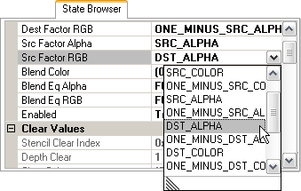

The "GL Context" tab in the Scrubber GL displays the OpenGLES context state as of the selected render call.

Basic usage:
• Capture a frame from the connected application, and select a render call in the call trace. The state browser will update to reflect the context state set at the time of the selected render call.
• The value of a state element can be changed by clicking on its dropdown list, and then selecting a new value. The emulator will then rerender scene using the new state value.